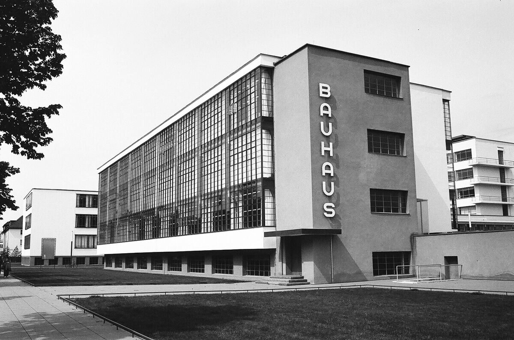

Diseño editorial · 2026
Minimalismo: menos es más
Artículo long read sobre el origen, los principios y la aplicación del minimalismo al diseño digital.

Contexto
Lectura prolongada
El ejercicio proponía diseñar un artículo extenso, legible y responsive. El tema elegido fue el minimalismo y su relación con la funcionalidad.
La prioridad era mantener una lectura cómoda en móvil y escritorio mediante una jerarquía tipográfica clara.
Proceso
Jerarquía y ritmo
El texto se organizó en secciones breves con imágenes intercaladas, pies de foto y una cita destacada. El ancho de lectura se limitó para evitar líneas demasiado largas.

Resultado
Contenido legible
La página final combina tipografía, espacio en blanco e imágenes adaptables. Las media queries reorganizan el contenido sin perder continuidad.
Ficha técnica
- Año: 2026
- Asignatura: Diseño Web
- Herramientas: HTML y CSS
- Tipo: Artículo responsive